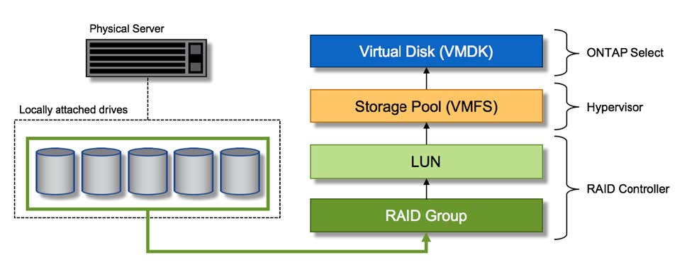

Note di rilascio
Note di rilascio
Servizi RAID hardware per lo storage locale collegato
 Suggerisci modifiche
Suggerisci modifiche
Quando è disponibile un controller RAID hardware, ONTAP Select può spostare i servizi RAID nel controller hardware per aumentare le performance di scrittura e proteggere dai guasti fisici dei dischi. Di conseguenza, la protezione RAID per tutti i nodi all'interno del cluster ONTAP Select viene fornita dal controller RAID collegato localmente e non dal software RAID ONTAP.

|
Gli aggregati di dati ONTAP Select sono configurati per l'utilizzo di RAID 0 perché il controller RAID fisico sta fornendo striping RAID ai dischi sottostanti. Non sono supportati altri livelli RAID. |
Configurazione del controller RAID per lo storage locale collegato
Tutti i dischi collegati localmente che forniscono a ONTAP Select lo storage di backup devono essere posizionati dietro un controller RAID. La maggior parte dei server commodity è dotata di diverse opzioni di controller RAID in diversi prezzi, ciascuno con diversi livelli di funzionalità. L'intento è quello di supportare il maggior numero possibile di queste opzioni, purché soddisfino determinati requisiti minimi sul controller.
Il controller RAID che gestisce i dischi ONTAP Select deve soddisfare i seguenti requisiti:
-
Il controller RAID hardware deve disporre di un'unità di backup della batteria (BBU) o di una cache di scrittura con backup flash (FBWC) e supportare un throughput di 12 Gbps.
-
Il controller RAID deve supportare una modalità in grado di resistere ad almeno uno o due guasti del disco (RAID 5 e RAID 6).
-
La cache del disco deve essere impostata su Disabled (disattivata).
-
Il criterio di scrittura deve essere configurato per la modalità di writeback con un fallback da scrivere in caso di guasto alla BBU o alla flash.
-
Il criterio i/o per le letture deve essere impostato su cache.
Tutti i dischi collegati localmente che forniscono ONTAP Select con storage di backup devono essere collocati in gruppi RAID che eseguono RAID 5 o RAID 6. Per i dischi SAS e gli SSD, l'utilizzo di gruppi RAID fino a 24 dischi consente a ONTAP di sfruttare i vantaggi dello spread delle richieste di lettura in entrata su un numero più elevato di dischi. In questo modo si ottiene un significativo guadagno in termini di performance. Con le configurazioni SAS/SSD, i test delle performance sono stati eseguiti su configurazioni con LUN singola o su più LUN. Non sono state rilevate differenze significative, pertanto, per semplicità, NetApp consiglia di creare il minor numero di LUN necessari per supportare le esigenze di configurazione.
I dischi NL-SAS e SATA richiedono un set diverso di Best practice. Per motivi di performance, il numero minimo di dischi è ancora otto, ma la dimensione del gruppo RAID non deve essere superiore a 12 dischi. NetApp consiglia inoltre di utilizzare uno spare per gruppo RAID; tuttavia, è possibile utilizzare spare globali per tutti i gruppi RAID. Ad esempio, è possibile utilizzare due unità di riserva per ogni tre gruppi RAID, con ciascun gruppo RAID composto da otto a 12 unità.
|
|
L'estensione massima e la dimensione del datastore per le release ESX precedenti sono 64 TB, il che può influire sul numero di LUN necessari per supportare la capacità raw totale fornita da questi dischi a elevata capacità. |
Modalità RAID
Molti controller RAID supportano fino a tre modalità operative, ciascuna delle quali rappresenta una differenza significativa nel percorso dei dati preso dalle richieste di scrittura. Queste tre modalità sono le seguenti:
-
WriteThrough. Tutte le richieste di i/o in entrata vengono scritte nella cache del controller RAID e quindi immediatamente inviate al disco prima di confermare la richiesta all'host.
-
Writearound. Tutte le richieste di i/o in entrata vengono scritte direttamente su disco, eludendo la cache del controller RAID.
-
Sriveback. Tutte le richieste di i/o in entrata vengono scritte direttamente nella cache del controller e riconnesse immediatamente all'host. I blocchi di dati vengono trasferiti su disco in modo asincrono utilizzando il controller.
La modalità di writeback offre il percorso dati più breve, con riconoscimento i/o che si verifica immediatamente dopo l'ingresso dei blocchi nella cache. Questa modalità offre la latenza più bassa e il throughput più elevato per carichi di lavoro misti in lettura/scrittura. Tuttavia, senza la presenza di una BBU o di una tecnologia flash non volatile, gli utenti corrono il rischio di perdere i dati se il sistema subisce un'interruzione dell'alimentazione durante il funzionamento in questa modalità.
ONTAP Select richiede la presenza di una batteria di backup o di un'unità flash; pertanto, possiamo essere sicuri che i blocchi memorizzati nella cache vengano scaricati sul disco in caso di questo tipo di guasto. Per questo motivo, è necessario che il controller RAID sia configurato in modalità writeback.
Dischi locali condivisi tra ONTAP Select e il sistema operativo
La configurazione del server più comune è quella in cui tutti gli spindle collegati localmente si trovano dietro un singolo controller RAID. È necessario eseguire il provisioning di almeno due LUN: Uno per l'hypervisor e uno per la macchina virtuale ONTAP Select.
Ad esempio, si consideri un HP DL380 g8 con sei dischi interni e un singolo controller RAID Smart Array P420i. Tutti i dischi interni sono gestiti da questo controller RAID e nessun altro storage è presente nel sistema.
La figura seguente mostra questo stile di configurazione. In questo esempio, nessun altro storage è presente nel sistema; pertanto, l'hypervisor deve condividere lo storage con il nodo ONTAP Select.
Configurazione del LUN del server con solo spindle gestiti da RAID

Il provisioning dei LUN del sistema operativo dallo stesso gruppo RAID di ONTAP Select consente al sistema operativo dell'hypervisor (e a qualsiasi macchina virtuale client fornita da tale storage) di beneficiare della protezione RAID. Questa configurazione impedisce che un guasto a un disco singolo causi il blocco dell'intero sistema.
Dischi locali suddivisi tra ONTAP Select e sistema operativo
L'altra possibile configurazione fornita dai vendor di server prevede la configurazione del sistema con più RAID o controller di dischi. In questa configurazione, un set di dischi viene gestito da un controller di dischi, che potrebbe offrire o meno servizi RAID. Un secondo set di dischi è gestito da un controller RAID hardware in grado di offrire servizi RAID 5/6.
Con questo stile di configurazione, il set di spindle che si trovano dietro il controller RAID in grado di fornire i servizi RAID 5/6 deve essere utilizzato esclusivamente dalla macchina virtuale ONTAP Select. A seconda della capacità di storage totale in gestione, è necessario configurare gli spindle dei dischi in uno o più gruppi RAID e in una o più LUN. Questi LUN vengono quindi utilizzati per creare uno o più datastore, con tutti i datastore protetti dal controller RAID.
Il primo set di dischi è riservato al sistema operativo dell'hypervisor e a qualsiasi macchina virtuale client che non utilizza lo storage ONTAP, come illustrato nella figura seguente.
Configurazione del LUN del server su sistemi RAID/non RAID misti

LUN multipli
Esistono due casi in cui è necessario modificare le configurazioni di un singolo gruppo RAID/LUN singolo. Quando si utilizzano dischi NL-SAS o SATA, le dimensioni del gruppo RAID non devono superare i 12 dischi. Inoltre, un singolo LUN può diventare più grande dei limiti di storage dell'hypervisor sottostante, sia per quanto riguarda le dimensioni massime dei singoli file system che per quelle dei pool di storage totali. Quindi, lo storage fisico sottostante deve essere suddiviso in più LUN per consentire la corretta creazione del file system.
Limiti del file system per macchine virtuali VMware vSphere
La dimensione massima di un datastore su alcune versioni di ESX è di 64 TB.
Se un server dispone di oltre 64 TB di storage collegati, potrebbe essere necessario eseguire il provisioning di più LUN, ciascuna inferiore a 64 TB. La creazione di più gruppi RAID per migliorare il tempo di ricostruzione RAID per i dischi SATA/NL-SAS comporta anche il provisioning di più LUN.
Quando sono necessarie più LUN, un importante punto da considerare è assicurarsi che queste LUN abbiano performance simili e coerenti. Ciò è particolarmente importante se tutte le LUN devono essere utilizzate in un singolo aggregato ONTAP. In alternativa, se un sottoinsieme di una o più LUN ha un profilo di performance nettamente diverso, si consiglia di isolare tali LUN in un aggregato ONTAP separato.
È possibile utilizzare più estensioni del file system per creare un singolo datastore fino alle dimensioni massime del datastore. Per limitare la capacità che richiede una licenza ONTAP Select, assicurarsi di specificare un limite di capacità durante l'installazione del cluster. Questa funzionalità consente a ONTAP Select di utilizzare (e quindi richiedere una licenza per) solo un sottoinsieme dello spazio in un datastore.
In alternativa, è possibile iniziare creando un singolo datastore su una singola LUN. Quando è necessario uno spazio aggiuntivo che richiede una licenza di capacità ONTAP Select più grande, è possibile aggiungere tale spazio allo stesso datastore di un'estensione, fino alle dimensioni massime del datastore. Una volta raggiunta la dimensione massima, è possibile creare nuovi datastore e aggiungerli a ONTAP Select. Entrambi i tipi di operazioni di estensione della capacità sono supportati e possono essere ottenuti utilizzando la funzionalità storage-add di ONTAP Deploy. Ogni nodo ONTAP Select può essere configurato per supportare fino a 400 TB di storage. Il provisioning della capacità da più datastore richiede un processo in due fasi.
La creazione iniziale del cluster può essere utilizzata per creare un cluster ONTAP Select che occupa parte o tutto lo spazio nel datastore iniziale. Una seconda fase consiste nell'eseguire una o più operazioni di aggiunta di capacità utilizzando datastore aggiuntivi fino a raggiungere la capacità totale desiderata. Questa funzionalità è illustrata in dettaglio nella sezione "Aumentare la capacità di storage".
|
|
L'overhead VMFS non è pari a zero (vedere "VMware KB 1001618"), e il tentativo di utilizzare l'intero spazio riportato come libero da un datastore ha causato errori spuri durante le operazioni di creazione del cluster. |
Un buffer del 2% viene lasciato inutilizzato in ciascun datastore. Questo spazio non richiede una licenza di capacità perché non viene utilizzato da ONTAP Select. ONTAP Deploy calcola automaticamente il numero esatto di gigabyte per il buffer, a condizione che non venga specificato un limite di capacità. Se viene specificato un limite massimo di capacità, tale dimensione viene applicata per prima. Se la dimensione del limite di capacità rientra nella dimensione del buffer, la creazione del cluster non riesce e viene visualizzato un messaggio di errore che specifica il parametro di dimensione massima corretto che può essere utilizzato come limite di capacità:
“InvalidPoolCapacitySize: Invalid capacity specified for storage pool “ontap-select-storage-pool”, Specified value: 34334204 GB. Available (after leaving 2% overhead space): 30948”
VMFS 6 è supportato sia per le nuove installazioni che come destinazione di un'operazione di storage vMotion di un'implementazione ONTAP esistente o di una macchina virtuale ONTAP Select.
VMware non supporta gli aggiornamenti in-place da VMFS 5 a VMFS 6. Pertanto, Storage vMotion è l'unico meccanismo che consente a qualsiasi macchina virtuale di passare da un datastore VMFS 5 a un datastore VMFS 6. Tuttavia, il supporto per Storage vMotion con ONTAP Select e ONTAP Deploy è stato esteso per coprire altri scenari oltre allo scopo specifico di passare da VMFS 5 a VMFS 6.
Dischi virtuali ONTAP Select
In primo luogo, ONTAP Select presenta ONTAP con un set di dischi virtuali forniti da uno o più pool di storage. ONTAP viene presentato con un set di dischi virtuali che considera fisici e la parte rimanente dello stack di storage viene astratta dall'hypervisor. La figura seguente mostra questa relazione in maggiore dettaglio, evidenziando la relazione tra il controller RAID fisico, l'hypervisor e la macchina virtuale ONTAP Select.
-
La configurazione del gruppo RAID e del LUN avviene all'interno del software del controller RAID del server. Questa configurazione non è necessaria quando si utilizzano array VSAN o esterni.
-
La configurazione del pool di storage avviene dall'interno dell'hypervisor.
-
I dischi virtuali sono creati e di proprietà di singole macchine virtuali; in questo esempio, ONTAP Select.
Mappatura da disco virtuale a disco fisico

Provisioning di dischi virtuali
Per offrire un'esperienza utente più ottimizzata, lo strumento di gestione ONTAP Select, ONTAP Deploy, esegue il provisioning automatico dei dischi virtuali dal pool di storage associato e li collega alla macchina virtuale ONTAP Select. Questa operazione viene eseguita automaticamente durante la configurazione iniziale e durante le operazioni di aggiunta dello storage. Se il nodo ONTAP Select fa parte di una coppia ha, i dischi virtuali vengono assegnati automaticamente a un pool di storage locale e mirror.
ONTAP Select suddivide lo storage collegato sottostante in dischi virtuali di uguali dimensioni, ciascuno non superiore a 16 TB. Se il nodo ONTAP Select fa parte di una coppia ha, vengono creati almeno due dischi virtuali su ciascun nodo del cluster e assegnati al plesso locale e mirror da utilizzare all'interno di un aggregato mirrorato.
Ad esempio, un ONTAP Select può assegnare un datastore o un LUN pari a 31 TB (lo spazio rimanente dopo l'implementazione della macchina virtuale e il provisioning dei dischi di sistema e root). Vengono quindi creati quattro dischi virtuali da ~7,75 TB e assegnati al plesso locale e mirror ONTAP appropriato.
|
|
L'aggiunta di capacità a una macchina virtuale ONTAP Select probabilmente comporta VMDK di dimensioni diverse. Per ulteriori informazioni, consultare la sezione "Aumentare la capacità di storage". A differenza dei sistemi FAS, nello stesso aggregato possono esistere VMDK di dimensioni diverse. ONTAP Select utilizza uno stripe RAID 0 in tutti questi VMDK, il che consente di utilizzare completamente tutto lo spazio in ogni VMDK indipendentemente dalle sue dimensioni. |
NVRAM virtualizzata
I sistemi NetApp FAS sono tradizionalmente dotati di una scheda PCI NVRAM fisica, una scheda dalle performance elevate contenente memoria flash non volatile. Questa scheda offre un significativo miglioramento delle prestazioni di scrittura, consentendo a ONTAP di riconoscere immediatamente le scritture in entrata nel client. Può anche pianificare lo spostamento dei blocchi di dati modificati sui supporti di storage più lenti in un processo noto come destaging.
I sistemi commodity in genere non sono dotati di questo tipo di apparecchiatura. Pertanto, la funzionalità di questa scheda NVRAM è stata virtualizzata e inserita in una partizione sul disco di avvio del sistema ONTAP Select. È per questo motivo che il posizionamento del disco virtuale di sistema dell'istanza è estremamente importante. Questo è anche il motivo per cui il prodotto richiede la presenza di un controller RAID fisico con una cache resiliente per le configurazioni di storage locale collegato.
La NVRAM viene inserita nel proprio VMDK. La suddivisione della NVRAM nel proprio VMDK consente alla VM ONTAP Select di utilizzare il driver vNVMe per comunicare con il VMDK NVRAM. Richiede inoltre che la macchina virtuale ONTAP Select utilizzi la versione hardware 13, che è compatibile con ESX 6.5 e versioni successive.
Spiegazione del percorso dei dati: NVRAM e controller RAID
L'interazione tra la partizione di sistema NVRAM virtualizzata e il controller RAID può essere evidenziata al meglio attraverso il percorso dei dati intrapreso da una richiesta di scrittura quando entra nel sistema.
Le richieste di scrittura in entrata alla macchina virtuale ONTAP Select sono indirizzate alla partizione NVRAM della macchina virtuale. Al livello di virtualizzazione, questa partizione esiste all'interno di un disco di sistema ONTAP Select, un VMDK collegato alla macchina virtuale ONTAP Select. Al livello fisico, queste richieste vengono memorizzate nella cache del controller RAID locale, come tutte le modifiche dei blocchi mirate agli spindle sottostanti. Da qui, la scrittura viene ricondotto all'host.
A questo punto, fisicamente, il blocco risiede nella cache del controller RAID, in attesa di essere trasferito su disco. Logicamente, il blocco risiede nella NVRAM in attesa di destaging sui dischi dati dell'utente appropriati.
Poiché i blocchi modificati vengono memorizzati automaticamente nella cache locale del controller RAID, le scritture in entrata nella partizione NVRAM vengono automaticamente memorizzate nella cache e periodicamente salvate nel supporto di storage fisico. Questo non deve essere confuso con il rossore periodico del contenuto NVRAM sui dischi dati ONTAP. Questi due eventi non sono correlati e si verificano in orari e frequenze differenti.
La figura seguente mostra il percorso i/o richiesto da una scrittura in entrata. Evidenzia la differenza tra il layer fisico (rappresentato dalla cache e dai dischi del controller RAID) e il layer virtuale (rappresentato dalla NVRAM della macchina virtuale e dai dischi virtuali dei dati).
|
|
Sebbene i blocchi modificati nella NVRAM VMDK siano memorizzati nella cache del controller RAID locale, la cache non è a conoscenza del costrutto della macchina virtuale o dei suoi dischi virtuali. Memorizza tutti i blocchi modificati nel sistema, di cui la NVRAM è solo una parte. Sono incluse le richieste di scrittura associate all'hypervisor, se il provisioning viene eseguito dagli stessi spindle di backup. |
Scritture in entrata su ONTAP Select VM

|
|
La partizione NVRAM è separata sul proprio VMDK. Che VMDK sia collegato utilizzando il driver vNVME disponibile nelle versioni ESX della versione 6.5 o successiva. Questa modifica è più significativa per le installazioni ONTAP Select con RAID software, che non beneficiano della cache del controller RAID. |